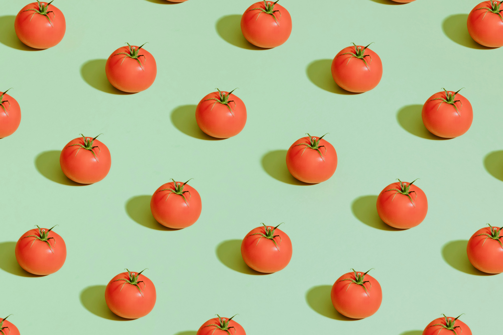

우리는 토마토에 대해 잘 알지 못한다. 익숙하고 친근한 식재료임에도 토마토는 편견으로 가득하다. 만약 우리가 토마토를 잘 알았더라면 여전히 토마토를 좋아할까? 그건 모르는 일이다. 다음 내용으로 우리가 잘 알지 못 했던 토마토에 대한 오해를 설명하겠다.
토마토는 사실 채소이기도 하고 과일이기도 한 과채류이다. 식물학적으로 과일은 씨앗이 들어있는 꽃 식물의 성숙한 난소를 말한다. 토마토는 일반적으로 짭짤한 요리에 사용되지만 생식구조에 따라 과일로 분류되기도 한다. 이러한 오해는 19세기 미국 대법원이 과세 목적으로 토마토를 채소로 분류했기 때문에 생물학적 관점이 아닌 법적 관점에서 비롯된 것이다.
또 다른 일반적인 오해는 토마토가 항상 빨간색이라는 점이다. 빨간 토마토가 가장 친숙한 품종이지만 노란색, 주황색, 녹색 심지어는 보라색을 포함한 다양한 색상이 있다.
토마토 씨앗은 건강에 좋지 않으므로 섭취 전에 제거되어야 한다는 주장이 종종 있습니다. 조리 과정에서 일부 영양소가 분해되는 것은 사실이나 조리 과정에서 특정 유익한 화합물의 생체이용률이 향상될 수도 있다.
